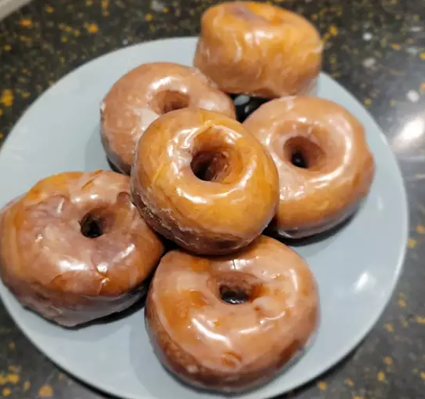

Donuts Recipe

Description
Donuts are a sweet, fried dough food that is popular all over the world. They can be made in a variety of shapes and sizes, but the most common type is a ring-shaped donut with a hole in the middle. Donuts can be filled with a variety of sweet fillings, such as jelly, custard, or chocolate, or they can be glazed with a simple sugar glaze. They are often served for breakfast or as a snack.
Ingredients
- 2 (.25 ounce) envelopes active dry yeast
- ¼ cup warm water (105 to 115 degrees)
- 1 ½ cups lukewarm milk
- ½ cup white sugar
- 1 teaspoon salt
- 2 eggs
- ⅓ cup shortening
- 5 cups all-purpose flour
- 1 quart vegetable oil for frying
- ⅓ cup butter
- 2 cups confectioners' sugar
- 1 ½ teaspoons vanilla
- 4 tablespoons hot water or as needed
Steps
- Sprinkle the yeast over the warm water, and let stand for 5 minutes, or until foamy.
- In a large bowl, mix together the yeast mixture, milk, sugar, salt, eggs, shortening, and 2 cups of the flour. Mix for a few minutes at low speed, or stirring with a wooden spoon. Beat in remaining flour 1/2 cup at a time, until the dough no longer sticks to the bowl. Knead for about 5 minutes, or until smooth and elastic. Place the dough into a greased bowl, and cover. Set in a warm place to rise until double. Dough is ready if you touch it, and the indention remains.
- Turn the dough out onto a floured surface, and gently roll out to 1/2 inch thickness. Cut with a floured doughnut cutter. Let doughnuts sit out to rise again until double. Cover loosely with a cloth.
- Melt butter in a saucepan over medium heat. Stir in confectioners' sugar and vanilla until smooth. Remove from heat, and stir in hot water one tablespoon at a time until the icing is somewhat thin, but not watery. Set aside.
- Heat oil in a deep-fryer or large heavy skillet to 350 degrees F (175 degrees C). Slide doughnuts into the hot oil using a wide spatula. Turn doughnuts over as they rise to the surface. Fry doughnuts on each side until golden brown. Remove from hot oil, to drain on a wire rack. Dip doughnuts into the glaze while still hot, and set onto wire racks to drain off excess. Keep a cookie sheet or tray under racks for easier clean up.
- Enjoy!